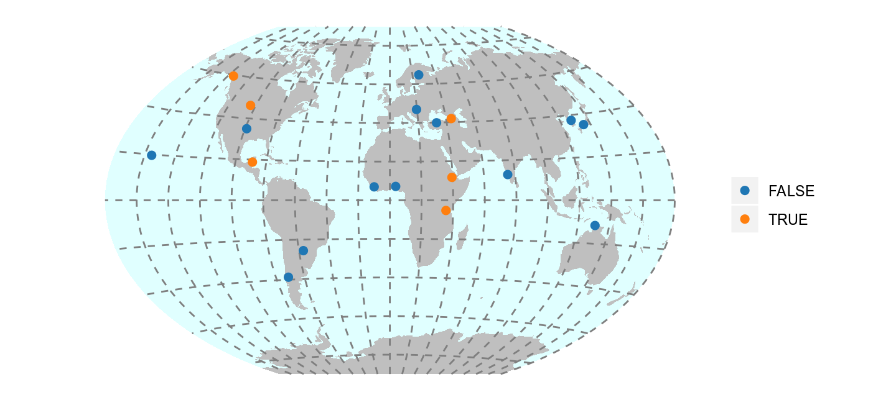
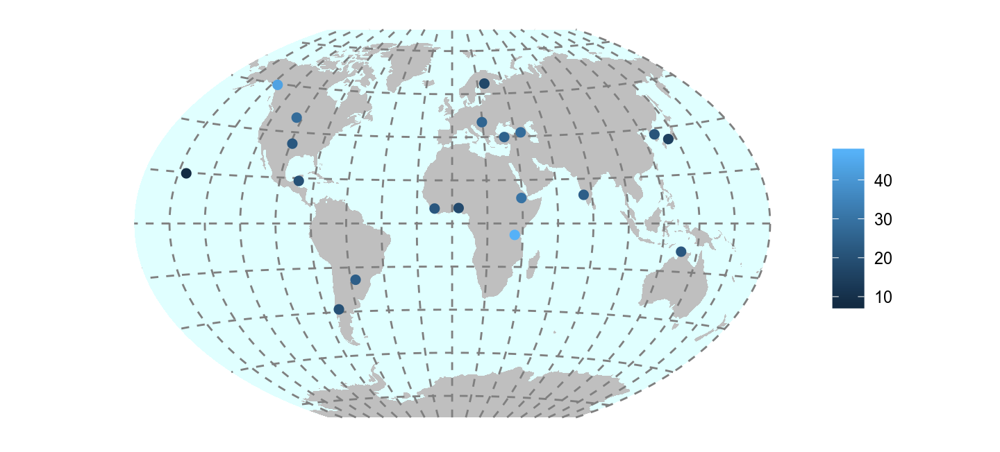

lingtypology: creating mapsThe most important part of the lingtypology package is the function map.feature. This function allows you to produce maps similar to known projects within the Cross-Linguistic Linked Data philosophy, such as WALS and Glottolog:
As shown in the picture above, this function generates an interactive Leaflet map. All specific points on the map have a pop-up box that appears when markers are clicked (see section 3.3 for more information about editing pop-up boxes). By default, they contain language names linked to the glottolog site.
If for some reasons you are not using RStudio or you want to automatically create and save a lot of maps, you can save a map to a variable and use the htmlwidgets package for saving created maps to an .html file. I would like to thank Timo Roettger for mentioning this problem.
m <- map.feature(c("Adyghe", "Korean"))
# install.packages("htmlwidgets")
library(htmlwidgets)
saveWidget(m, file="TYPE_FILE_PATH/m.html")There is an export button in RStudio, but for some reason it is not so easy to save a map as a .png or.jpg file using code. Here is a possible solution.
The goal of this package is to allow typologists (or any other linguists) to map language features. A list of languages and correspondent features can be stored in a data.frame as follows:
df <- data.frame(language = c("Adyghe", "Kabardian", "Polish", "Russian", "Bulgarian"),
features = c("polysynthetic", "polysynthetic", "fusional", "fusional", "fusional"))
dfNow we can draw a map:
If you have a lot of features and they appear in the legend in a senseless order(by default it is ordered alphabetically), you can reorderthem using factors (a vector with ordered levels, for more information see ?factor). for example, I want the feature polysynthetic to be listed first, followed by fusional:
df$features <- factor(df$features, levels = c("polysynthetic", "fusional"))
map.feature(languages = df$language, features = df$features)Like in most functions, it is not necessary to name all arguments, so the same result can be obtained by:
As shown in the picture above, all points are grouped by feature, colored and counted. As before, a pop-up box appears when markers are clicked. A control feature allows users to toggle the visibility of points grouped by feature.
There are several types of variables in R and map.feature works differently depending on the variable type. I will use a build in data set phonological_profiles that contains 19 languages from UPSyD database. This dataset have three variables: the categorical variable ejectives indicates whether some language has any ejective sound, numeric variables consonants and vowels that contains information about the number of consonants and vowels (based on UPSyD database). We can create two maps with categorical variable and with numeric variable:
The main point is that for creating a correct map, you should correctly define the type of the variable.
This dataset also can be used to show one other parameter of the map.feature function. There are two possible ways to show the World map: with the Atlantic sea or with the Pacific sea in the middle. If you don’t need default Pacific view use the map.orientation parameter(thanks @languageSpaceLabs and @tzakharko for that idea):
Sometimes it is a good idea to add some additional information (e.g. language affiliation, references or even examples) to pop-up boxes that appear when points are clicked. In order to do so, first of all we need to create an extra vector of strings in our dataframe:
The function aff.lang() creates a vector of genealogical affiliations that can be easily mapped:
Pop-up strings can contain HTML tags, so it is easy to insert a link, a couple of lines, a table or even a video and sound. Here is how pop-up boxes can demonstrate language examples:
# change a df$popup vector
df$popup <- c("sɐ s-ɐ-k'ʷɐ<br> 1sg 1sg.abs-dyn-go<br>'I go'",
"sɐ s-o-k'ʷɐ<br> 1sg 1sg.abs-dyn-go<br>'I go'",
"id-ę<br> go-1sg.npst<br> 'I go'",
"ya id-u<br> 1sg go-1sg.npst <br> 'I go'",
"id-a<br> go-1sg.prs<br> 'I go'")
# create a map
map.feature(df$language,
features = df$features,
popup = df$popup)How to say moon in Sign Languages? Here is an example:
# Create a dataframe with links to video
sign_df <- data.frame(languages = c("American Sign Language", "Russian-Tajik Sign Language", "French Sign Language"),
popup = c("https://media.spreadthesign.com/video/mp4/13/48600.mp4", "https://media.spreadthesign.com/video/mp4/12/17639.mp4", "https://media.spreadthesign.com/video/mp4/10/17638.mp4"))
# Change popup to an HTML code
sign_df$popup <- paste("<video width='200' height='150' controls> <source src='",
as.character(sign_df$popup),
"' type='video/mp4'></video>", sep = "")
# create a map
map.feature(languages = sign_df$languages, popup = sign_df$popup)An alternative way to add some short text to a map is to use the label option.
There are some additional arguments for customization: label.fsize for setting font size, label.position for controlling the label position, and label.hide to control the appearance of the label: if TRUE, the labels are displayed on mouse over(as on the previous map), if FALSE, the labels are always displayed (as on the next map).
map.feature(df$language, df$features,
label = df$language,
label.fsize = 20,
label.position = "left",
label.hide = FALSE)There is an additional tool for emphasis of some points on the map. The argument label.emphasize allows to emphasize selected points with the color specified by a user.
map.feature(df$language, df$features,
label = df$language,
label.fsize = 20,
label.position = "left",
label.hide = FALSE,
label.emphasize = list(2:4, "red"))In this example the first vector of the list in the label.emphasize argument is vector 2:4 that produce elements 2, 3 and 4. You can create youro wn selected rows. e. g. c(1, 3, 4). The second vector of the list is the string with a color.
You can set your own coordinates using the arguments latitude and longitude. It is important to note, that lingtypology works only with decimal degrees (something like this: 0.1), not with degrees, minutes and seconds (something like this: 0° 06′ 0″). I will illustrate this with the dataset circassian built into the lingtypology package. This dataset comes from fieldwork collected during several expeditions in the period 2011-2016 and contains a list of Circassian villages:
In this dataframe you can find variables latitude and longitude that could be used:
You can set your own colors using the argument color:
df <- data.frame(language = c("Adyghe", "Kabardian", "Polish", "Russian", "Bulgarian"),
features = c("polysynthetic", "polysynthetic", "fusional", "fusional", "fusional"))
map.feature(languages = df$language,
features = df$features,
color= c("yellowgreen", "navy"))Arguments from RColorBrewer or viridis also can be used as a color argument:
For some scientific papers it is not possible to use colors for destinguishing features. In that cases it is posible to use shape argument:
map.feature(languages = circassian$language,
features = circassian$language,
latitude = circassian$latitude,
longitude = circassian$longitude,
shape = TRUE)The argument shape = TRUE works fine only with 6 or less levels in features variable. If there are more levels in fetures argument, user need to provide a vector with corresponding shapes:
map.feature(languages = circassian$language,
features = circassian$dialect,
latitude = circassian$latitude,
longitude = circassian$longitude,
shape = 1:10,
shape.size = 14)Arguments shape.size and shape.color help to change corresponding features of markers.
The package can generate a control box that allows users to toggle the visibility of points and features. To enable it, there is an argument control in the map.feature function:
The map.feature function has an additional argument stroke.features. Using this argument it becomes possible to show two independent sets of features on one map. By default strokes are colored in grey (so for two levels it will be black and white, for three — black, grey, white and so on), but you can set your own colors using the argument stroke.color:
map.feature(circassian$language,
features = circassian$dialect,
stroke.features = circassian$language,
latitude = circassian$latitude,
longitude = circassian$longitude)It is important to note that stroke.features can work with NA values. The function won’t plot anything if there is an NA value. Let’s set a language value to NA in all Baksan villages from the circassian dataset.
# create newfeature variable
newfeature <- circassian[,c(5,6)]
# set language feature of the Baksan villages to NA and reduce newfeature from dataframe to vector
newfeature <- replace(newfeature$language, newfeature$language == "Baksan", NA)
# create a map
map.feature(circassian$language,
features = circassian$dialect,
latitude = circassian$latitude,
longitude = circassian$longitude,
stroke.features = newfeature)All markers have their own width and opacity, so you can set it. Just use the arguments width, stroke.radius, opacity and stroke.opacity:
By default the legend appears in the top right corner. If there are stroke features, two legends are generated. There are additional arguments that control the appearence and the title of the legends.
map.feature(circassian$language,
features = circassian$dialect,
stroke.features = circassian$language,
latitude = circassian$latitude,
longitude = circassian$longitude,
legend = FALSE, stroke.legend = TRUE)map.feature(circassian$language,
features = circassian$dialect,
stroke.features = circassian$language,
latitude = circassian$latitude,
longitude = circassian$longitude,
title = "Circassian dialects", stroke.title = "Languages")legend.position and stroke.legend.position allow you to change a legend’s position using “topright”, “bottomright”, “bottomleft” or“topleft” strings.
A scale bar is automatically added to a map, but you can control its appearance (set scale.bar argument to TRUE orFALSE) and its position (use scale.bar.position argument values “topright”, “bottomright”, “bottomleft” or“topleft”).
It is possible to use different tiles on the same map using the tile argument. For more tiles see here.
df <- data.frame(lang = c("Adyghe", "Kabardian", "Polish", "Russian", "Bulgarian"),
feature = c("polysynthetic", "polysynthetic", "fusion", "fusion", "fusion"),
popup = c("Adyghe", "Adyghe", "Slavic", "Slavic", "Slavic"))
map.feature(df$lang, df$feature, df$popup,
tile = "Stamen.TonerLite")It is possible to use different map tiles on the same map. Just add a vector with tiles.
It is possible to name tiles using the tile.name argument.
map.feature(df$lang, df$feature, df$popup,
tile = c("OpenStreetMap", "Stamen.TonerLite"),
tile.name = c("colored", "b & w"))It is possible to combine the tiles’ control box with the features’ control box.
It is possible to add a minimap to a map.
You can control its appearance (by setting the minimap argument to TRUE or FALSE), its position (by using the values “topright”, “bottomright”, “bottomleft” or“topleft” of the minimap.position argument) and its height and width (with the arguments minimap.height and minimap.width).
This part is created using the beutifull leaflet.minicharts library. The argument minichart allows you to add piecharts or barplots instead of standard point markers. In this part I will use a build in data set phonological_profiles that contains 19 languages from UPSyD database. Here is an example of barplot:
map.feature(languages = phonological_profiles$language,
minichart.data = phonological_profiles[, c("vowels", "consonants")])Here is an example of piechart:
map.feature(languages = phonological_profiles$language,
minichart.data = phonological_profiles[, c("vowels", "consonants")],
minichart = "pie")Colors and opacity could be changed, legend moved:
map.feature(languages = phonological_profiles$language,
minichart.data = phonological_profiles[, c("vowels", "consonants")],
color= c("yellowgreen", "navy"),
opacity = 0.7,
label = phonological_profiles$language,
legend.position = "topleft")It is possible to add values using argument minichart.labels:
map.feature(languages = phonological_profiles$language,
minichart.data = phonological_profiles[, c("vowels", "consonants")],
minichart = "pie",
minichart.labels = TRUE)It is also possible to use pie chart in non-convenient way: just indicating with TRUE or FALSE of pressence of some feature (thanks to Diana Forker for the task!):
map.feature(languages = phonological_profiles$language,
minichart.data = phonological_profiles[, c("tone", "long_vowels", "stress", "ejectives")],
minichart = "pie",
width = 3)Unfortunately this kind of visualisation doesn’t work, when you have some lines in your dataset that contain only FALSE values. This is non-convenient way of category visualisation, so visualisation experts could have a negative opinion about it. This kind of visualisation is also bad for huge number of variables.
It is possible to highlight some part of your map with a rectangle. You need to provide a latitude and longitude of the diagonal (rectangle.lat and rectangel.lng) and color of the rectangle (rectangle.color):
Sometimes it is easier to look at a density contourplot. It can be created using density.estimation argument. There are two possibility for creation a density contourplot in lingtypology:
density.method = "fixed distance". First algorithm creates circle polygons with fixed radius around each point and then merge all polygons that are overlapped. It has only one parameter that should be estimated: radius of the circle (density.width).density.method = "kernal density estimation". Second algorithm uses a kernal density estimation and has two parameters that should be estimated: latitude and longitude bandwidths (density.width[1] and (density.width[2]))map.feature(circassian$language,
longitude = circassian$longitude,
latitude = circassian$latitude,
density.estimation = circassian$language,
density.width = 0.15)Density estimation plot can be separated by features variable:
map.feature(circassian$language,
features = circassian$dialect,
longitude = circassian$longitude,
latitude = circassian$latitude,
density.estimation = circassian$language,
density.width = 0.15)It is possible to remove points and display only the kernal density estimation plot, using the density.points argument:
map.feature(circassian$language,
longitude = circassian$longitude,
latitude = circassian$latitude,
density.estimation = circassian$language,
density.width = 0.15,
density.points = FALSE)It is possible to change kernal density estimation plot opacity using thedensity.estimation.opacity argument:
map.feature(circassian$language,
longitude = circassian$longitude,
latitude = circassian$latitude,
density.estimation = circassian$language,
density.width = 0.15,
density.estimation.opacity = 0.2)If you want to use kernal density estimation, you need to change method type and provide a vector of parameters that increase/decrease area:
map.feature(circassian$language,
features = circassian$language,
longitude = circassian$longitude,
latitude = circassian$latitude,
density.estimation = "Circassian",
density.method = "kernal density estimation",
density.width = c(0.3, 0.3),
color= c("darkgreen", "blue"))map.feature(circassian$language,
features = circassian$language,
longitude = circassian$longitude,
latitude = circassian$latitude,
density.estimation = "Circassian",
density.method = "kernal density estimation",
density.width = c(0.7, 0.7),
color= c("darkgreen", "blue"))map.feature(circassian$language,
features = circassian$language,
longitude = circassian$longitude,
latitude = circassian$latitude,
density.estimation = "Circassian",
density.method = "kernal density estimation",
density.width = c(1.3, 0.9),
color= c("darkgreen", "blue"))It is important to note, that this type of visualization have some shortcomings. The kernel density estimation is calculated without any adjustment, so longitude and latitude values used as a values in Cartesian coordinate system. To reduce consequences of that solution it is better to use a different coordinate projection. That allows not to treat Earth as a flat object.
It is possible to try to catch isoglosses, using the kernel density estimation algorithm. The map.feature argument isogloss recieves a dataframe with set of features:
map.feature(languages = circassian$language,
latitude = circassian$latitude,
longitude = circassian$longitude,
features = circassian$dialect,
label = circassian$dialect,
legend = TRUE,
isogloss = as.data.frame(circassian[,"dialect"]),
isogloss.width = 0.15)It is possible to create true isoglosses by hand, see tools for it here.
It is possible to show some lines on the map using coordinates (line.lng and line.lat arguments).
map.feature(circassian$language,
features = circassian$language,
longitude = circassian$longitude,
latitude = circassian$latitude,
line.lng = c(39, 43),
line.lat = c(44.5, 43))If there are more then two coordinates, multiple lines will appear. It is also possible to change the color of the line using the line.color argument.
map.feature(circassian$language,
features = circassian$language,
longitude = circassian$longitude,
latitude = circassian$latitude,
line.lng = c(43, 39, 38.5),
line.lat = c(43, 44.5, 45),
line.color= "green")If there are two levels in the features variable, it is possible to draw a boundary line between point clusters (the logistic regression is used for calculation).
map.feature(circassian$language,
features = circassian$language,
longitude = circassian$longitude,
latitude = circassian$latitude,
line.type = "logit")It is possible to add a graticule to a map.
ggplotSome journals and book publishers are not happy with the resolution of lingtypology maps. In order to obtain maps with high resolution in lingtypology I need to implement multiple things, and I only started this work. For now only this type of maps are available:


There will be more functionality in the future.